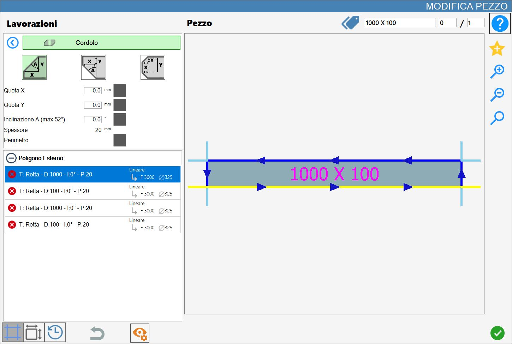

Esta función permite añadir un bordillo de tipo bisel o de tipo pico (pico de búho), o ambos, a los cortes de la pieza seleccionada.
La interfaz de esta función presenta un aspecto similar a la siguiente imagen:

Parámetros
Para utilizar este mecanizado, primero es necesario elegir uno de los tres modos disponibles seleccionando el botón correspondiente:
Los modos «Bisel» y «Pico» o «Bisel y Pico» son mutuamente excluyentes: al activar uno se desactivan automáticamente los demás.
 | Bisel |
 | Bisel inferior (pico de búho) |
 | Bisel y bisel inferior |
Los siguientes parámetros son comunes a ambos tipos de mecanizado:
Cota X | Distancia a lo largo del eje X desde el borde de la pieza. |
Cota Y | Distancia a lo largo del eje Y desde el borde de la pieza. |
Inclinación A | Ángulo de inclinación del corte expresado en grados sexagesimales. |
Inclinación B | Ángulo de inclinación del corte respecto al bisel inferior, expresado en grados sexagesimales. |
Espesor | Se muestra el espesor de la losa actualmente configurado en Parametrix para ayudar al usuario a aplicar el mecanizado. |
Perímetro | Al activar este parámetro, el mecanizado se ejecutará en todo el perímetro de la pieza. |
Junto a los tres primeros parámetros geométricos hay casillas de selección cuadradas, inicialmente desactivadas. Es necesario activar una para especificar qué parámetro debe mantenerse constante; de este modo, al proporcionar un segundo valor, el tercero se calcula automáticamente. Las casillas de selección no pueden habilitarse si el valor del parámetro correspondiente es igual a cero, a fin de evitar configuraciones geométricamente incoherentes o no válidas.
Ejecución del mecanizado
Es posible aplicar el mecanizado pulsando el botón situado a la izquierda del corte correspondiente en la lista de polígonos.
Un icono rojo con una «X» indica que el mecanizado no puede aplicarse al corte deseado.
El mecanizado de bordillo solo puede ejecutarse en cortes de tipo línea.
Cada bordillo insertado correctamente en el material actualiza la vista previa y se añade automáticamente a la sección «Mecanizados añadidos» de la izquierda.
Ejecución del bisel
Lado
En la siguiente imagen se puede ver el mecanizado del bordillo aplicado al lado de la pieza en la esquina superior.
Para aplicar el mecanizado al lado deseado, hay que hacer clic sobre él.

Perímetro
En la siguiente imagen se puede ver el mecanizado del bordillo aplicado al perímetro de la pieza en la esquina superior.
Para aplicar el mecanizado al perímetro, hay que activar la casilla situada a la derecha del texto y, a continuación, hacer clic en un lado de la pieza.

Ejecución del bisel inferior
Lado
En la siguiente imagen se puede ver el mecanizado del bordillo aplicado al lado de la pieza en la esquina inferior.
Para aplicar el mecanizado al lado deseado, hay que hacer clic sobre él.

Perímetro
En la siguiente imagen se puede ver el mecanizado del bordillo aplicado al perímetro de la pieza en la esquina inferior.
Para aplicar el mecanizado al perímetro, hay que activar la casilla situada a la derecha del texto y, a continuación, hacer clic en un lado de la pieza.

Ejecución del bisel y del bisel inferior
Lado
En la siguiente imagen se puede ver el mecanizado del bordillo aplicado al lado de la pieza en las esquinas superior e inferior
Para aplicar el mecanizado al lado deseado, hay que hacer clic sobre él.

Perímetro
En la siguiente imagen se puede ver el mecanizado del bordillo aplicado al perímetro de la pieza en las esquinas superior e inferior.
Para aplicar el mecanizado al perímetro, hay que activar la casilla situada a la derecha del texto y, a continuación, hacer clic en un lado de la pieza.